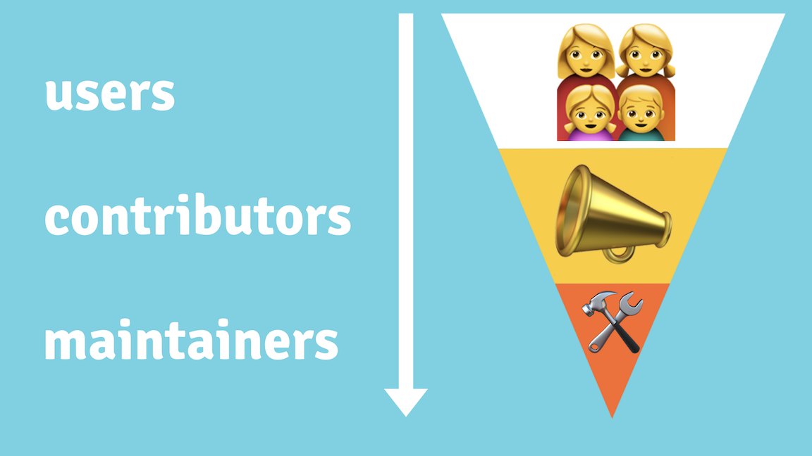
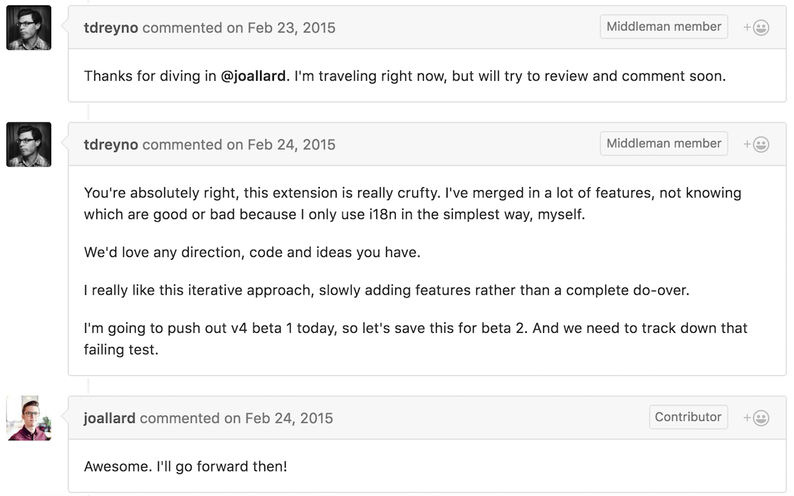
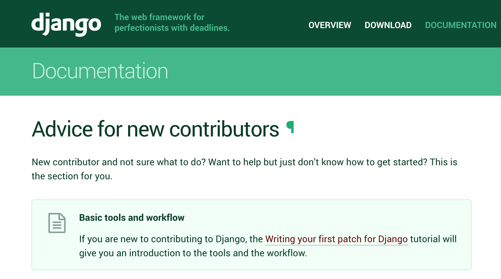
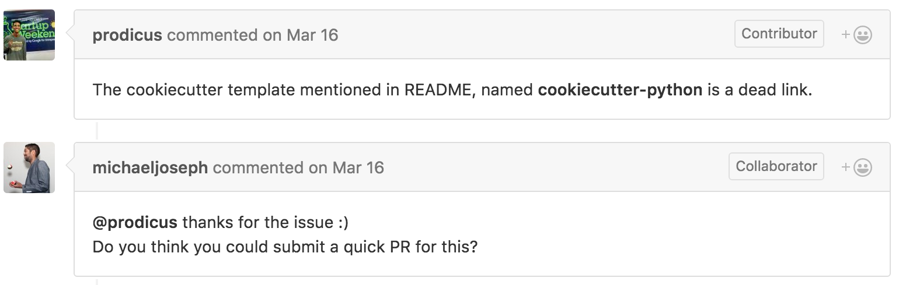

Setting your project up for success
You’ve launched your project, you’re spreading the word, and people are checking it out. Awesome! Now, how do you get them to stick around?
A welcoming community is an investment into your project’s future and reputation. If your project is just starting to see its first contributions, start by giving early contributors a positive experience, and make it easy for them to keep coming back.
Make people feel welcome
One way to think about your project’s community is through what @MikeMcQuaid calls the contributor funnel:

As you build your community, consider how someone at the top of the funnel (a potential user) might theoretically make their way to the bottom (an active maintainer). Your goal is to reduce friction at each stage of the contributor experience. When people have easy wins, they will feel incentivized to do more.
Start with your documentation:
- Make it easy for someone to use your project. A friendly README and clear code examples will make it easier for anyone who lands on your project to get started.
- Clearly explain how to contribute, using your CONTRIBUTING file and keeping your issues up-to-date.
- Good first issues: To help new contributors get started, consider explicitly labeling issues that are simple enough for beginners to tackle. GitHub will then surface these issues in various places on the platform, increasing useful contributions, and reducing friction from users tackling issues that are too hard for their level.
GitHub’s 2017 Open Source Survey showed incomplete or confusing documentation is the biggest problem for open source users. Good documentation invites people to interact with your project. Eventually, someone will open an issue or pull request. Use these interactions as opportunities to move them down the funnel.
- When someone new lands on your project, thank them for their interest! It only takes one negative experience to make someone not want to come back.
- Be responsive. If you don’t respond to their issue for a month, chances are, they’ve already forgotten about your project.
- Be open-minded about the types of contributions you’ll accept. Many contributors start with a bug report or small fix. There are many ways to contribute to a project. Let people help how they want to help.
- If there’s a contribution you disagree with, thank them for their idea and explain why it doesn’t fit into the scope of the project, linking to relevant documentation if you have it.
The majority of open source contributors are “casual contributors”: people who contribute to a project only occasionally. A casual contributor may not have time to get fully up to speed with your project, so your job is to make it easy for them to contribute.
Encouraging other contributors is an investment in yourself, too. When you empower your biggest fans to run with the work they’re excited about, there’s less pressure to do everything yourself.
Document everything
When you start a new project, it may feel natural to keep your work private. But open source projects thrive when you document your process in public.
When you write things down, more people can participate at every step of the way. You might get help on something you didn’t even know you needed.
Writing things down means more than just technical documentation. Any time you feel the urge to write something down or privately discuss your project, ask yourself whether you can make it public.
Be transparent about your project’s roadmap, the types of contributions you’re looking for, how contributions are reviewed, or why you made certain decisions.
If you notice multiple users running into the same problem, document the answers in the README.
For meetings, consider publishing your notes or takeaways in a relevant issue. The feedback you’ll get from this level of transparency may surprise you.
Documenting everything applies to the work you do, too. If you’re working on a substantial update to your project, put it into a pull request and mark it as a work in progress (WIP). That way, other people can feel involved in the process early on.
Be responsive
As you promote your project, people will have feedback for you. They may have questions about how things work, or need help getting started.
Try to be responsive when someone files an issue, submits a pull request, or asks a question about your project. When you respond quickly, people will feel they are part of a dialogue, and they’ll be more enthusiastic about participating.
Even if you can’t review the request immediately, acknowledging it early helps increase engagement. Here’s how @tdreyno responded to a pull request on Middleman:

A Mozilla study found that contributors who received code reviews within 48 hours had a much higher rate of return and repeat contribution.
Conversations about your project could also be happening in other places around the internet, such as Stack Overflow, Twitter, or Reddit. You can set up notifications in some of these places so you are alerted when someone mentions your project.
Give your community a place to congregate
There are two reasons to give your community a place to congregate.
The first reason is for them. Help people get to know each other. People with common interests will inevitably want a place to talk about it. And when communication is public and accessible, anybody can read past archives to get up to speed and participate.
The second reason is for you. If you don’t give people a public place to talk about your project, they will likely contact you directly. In the beginning, it may seem easy enough to respond to private messages “just this once”. But over time, especially if your project becomes popular, you will feel exhausted. Resist the temptation to communicate with people about your project in private. Instead, direct them to a designated public channel.
Public communication can be as simple as directing people to open an issue instead of emailing you directly or commenting on your blog. You could also set up a mailing list, or create a Twitter account, Slack, or IRC channel for people to talk about your project. Or try all of the above!
Kubernetes kops sets aside office hours every other week to help community members:
Kops also has time set aside every other week to offer help and guidance to the community. Kops maintainers have agreed to set aside time specifically dedicated to working with newcomers, helping with PRs, and discussing new features.
Notable exceptions to public communication are: 1) security issues and 2) sensitive code of conduct violations. You should always have a way for people to report these issues privately. If you don’t want to use your personal email, set up a dedicated email address.
Growing your community
Communities are extremely powerful. That power can be a blessing or a curse, depending on how you wield it. As your project’s community grows, there are ways to help it become a force of construction, not destruction.
Don’t tolerate bad actors
Any popular project will inevitably attract people who harm, rather than help, your community. They may start unnecessary debates, quibble over trivial features, or bully others.
Do your best to adopt a zero-tolerance policy towards these types of people. If left unchecked, negative people will make other people in your community uncomfortable. They may even leave.
Regular debates over trivial aspects of your project distracts others, including you, from focusing on important tasks. New people who arrive to your project may see these conversations and not want to participate.
When you see negative behavior happening on your project, call it out publicly. Explain, in a kind but firm tone, why their behavior is not acceptable. If the problem persists, you may need to ask them to leave. Your code of conduct can be a constructive guide for these conversations.
Meet contributors where they’re at
Good documentation only becomes more important as your community grows. Casual contributors, who may not otherwise be familiar with your project, read your documentation to quickly get the context they need.
In your CONTRIBUTING file, explicitly tell new contributors how to get started. You may even want to make a dedicated section for this purpose. Django, for example, has a special landing page to welcome new contributors.

In your issue queue, label bugs that are suitable for different types of contributors: for example, “first timers only”, “good first issue”, or “documentation”. These labels make it easy for someone new to your project to quickly scan your issues and get started.
Finally, use your documentation to make people feel welcome at every step of the way.
You will never interact with most people who land on your project. There may be contributions you didn’t receive because somebody felt intimidated or didn’t know where to get started. Even a few kind words can keep someone from leaving your project in frustration.
For example, here’s how Rubinius starts its contributing guide:
We want to start off by saying thank you for using Rubinius. This project is a labor of love, and we appreciate all of the users that catch bugs, make performance improvements, and help with documentation. Every contribution is meaningful, so thank you for participating. That being said, here are a few guidelines that we ask you to follow so we can successfully address your issue.
Share ownership of your project
People are excited to contribute to projects when they feel a sense of ownership. That doesn’t mean you need to turn over your project’s vision or accept contributions you don’t want. But the more you give credit to others, the more they’ll stick around.
See if you can find ways to share ownership with your community as much as possible. Here are some ideas:
- Resist fixing easy (non-critical) bugs. Instead, use them as opportunities to recruit new contributors, or mentor someone who’d like to contribute. It may seem unnatural at first, but your investment will pay off over time. For example, @michaeljoseph asked a contributor to submit a pull request on a Cookiecutter issue below, rather than fix it himself.

-
Start a CONTRIBUTORS or AUTHORS file in your project that lists everyone who’s contributed to your project, like Sinatra does.
-
If you’ve got a sizable community, send out a newsletter or write a blog post thanking contributors. Rust’s This Week in Rust and Hoodie’s Shoutouts are two good examples.
-
Give every contributor commit access. @felixge found that this made people more excited to polish their patches, and he even found new maintainers for projects that he hadn’t worked on in awhile.
-
If your project is on GitHub, move your project from your personal account to an Organization and add at least one backup admin. Organizations make it easier to work on projects with external collaborators.
The reality is that most projects only have one or two maintainers who do most of the work. The bigger your project, and the bigger your community, the easier it is to find help.
While you may not always find someone to answer the call, putting a signal out there increases the chances that other people will pitch in. And the earlier you start, the sooner people can help.
Resolving conflicts
In the early stages of your project, making major decisions is easy. When you want to do something, you just do it.
As your project becomes more popular, more people will take interest in the decisions you make. Even if you don’t have a big community of contributors, if your project has a lot of users, you’ll find people weighing in on decisions or raising issues of their own.
For the most part, if you’ve cultivated a friendly, respectful community and documented your processes openly, your community should be able to find resolution. But sometimes you run into an issue that’s a bit harder to address.
Set the bar for kindness
When your community is grappling with a difficult issue, tempers may rise. People may become angry or frustrated and take it out on one another, or on you.
Your job as a maintainer is to keep these situations from escalating. Even if you have a strong opinion on the topic, try to take the position of a moderator or facilitator, rather than jumping into the fight and pushing your views. If someone is being unkind or monopolizing the conversation, act immediately to keep discussions civil and productive.
Other people are looking to you for guidance. Set a good example. You can still express disappointment, unhappiness, or concern, but do so calmly.
Keeping your cool isn’t easy, but demonstrating leadership improves the health of your community. The internet thanks you.
Treat your README as a constitution
Your README is more than just a set of instructions. It’s also a place to talk about your goals, product vision, and roadmap. If people are overly focused on debating the merit of a particular feature, it may help to revisit your README and talk about the higher vision of your project. Focusing on your README also depersonalizes the conversation, so you can have a constructive discussion.
Focus on the journey, not the destination
Some projects use a voting process to make major decisions. While sensible at first glance, voting emphasizes getting to an “answer,” rather than listening to and addressing each other’s concerns.
Voting can become political, where community members feel pressured to do each other favors or vote a certain way. Not everybody votes, either, whether it’s the silent majority in your community, or current users who didn’t know a vote was taking place.
Sometimes, voting is a necessary tiebreaker. As much as you are able, however, emphasize “consensus seeking” rather than consensus.
Under a consensus seeking process, community members discuss major concerns until they feel they have been adequately heard. When only minor concerns remain, the community moves forward. “Consensus seeking” acknowledges that a community may not be able to reach a perfect answer. Instead, it prioritizes listening and discussion.
Even if you don’t actually adopt a consensus seeking process, as a project maintainer, it’s important that people know you are listening. Making other people feel heard, and committing to resolving their concerns, goes a long way to diffuse sensitive situations. Then, follow up on your words with actions.
Don’t rush into a decision for the sake of having a resolution. Make sure that everybody feels heard and that all information has been made public before moving toward a resolution.
Keep the conversation focused on action
Discussion is important, but there is a difference between productive and unproductive conversations.
Encourage discussion so long as it is actively moving towards resolution. If it’s clear that conversation is languishing or going off-topic, jabs are getting personal, or people are quibbling about minor details, it’s time to shut it down.
Allowing these conversations to continue is not only bad for the issue at hand, but bad for the health of your community. It sends a message that these types of conversations are permitted or even encouraged, and it can discourage people from raising or resolving future issues.
With every point made by you or by others, ask yourself, “How does this bring us closer to a resolution?”
If the conversation is starting to unravel, ask the group, “Which steps should we take next?” to refocus the conversation.
If a conversation clearly isn’t going anywhere, there are no clear actions to be taken, or the appropriate action has already been taken, close the issue and explain why you closed it.
Pick your battles wisely
Context is important. Consider who is involved in the discussion and how they represent the rest of the community.
Is everybody in the community upset about, or even engaged with, this issue? Or is a lone troublemaker? Don’t forget to consider your silent community members, not just the active voices.
If the issue does not represent the broader needs of your community, you may just need to acknowledge the concerns of a few people. If this is a recurring issue without a clear resolution, point them to previous discussions on the topic and close the thread.
Identify a community tiebreaker
With a good attitude and clear communication, most difficult situations are resolvable. However, even in a productive conversation, there can simply be a difference in opinion on how to proceed. In these cases, identify an individual or group of people that can serve as a tiebreaker.
A tiebreaker could be the primary maintainer of the project, or it could be a small group of people who make a decision based on voting. Ideally, you’ve identified a tiebreaker and the associated process in a GOVERNANCE file before you ever have to use it.
Your tiebreaker should be a last resort. Divisive issues are an opportunity for your community to grow and learn. Embrace these opportunities and use a collaborative process to move to a resolution wherever possible.
Community is the ❤️ of open source
Healthy, thriving communities fuel the thousands of hours poured into open source every week. Many contributors point to other people as the reason for working - or not working - on open source. By learning how to tap into that power constructively, you’ll help someone out there have an unforgettable open source experience.